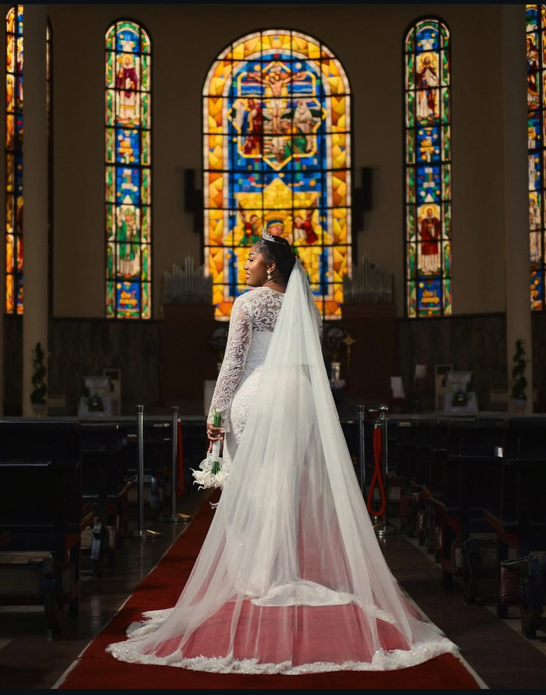
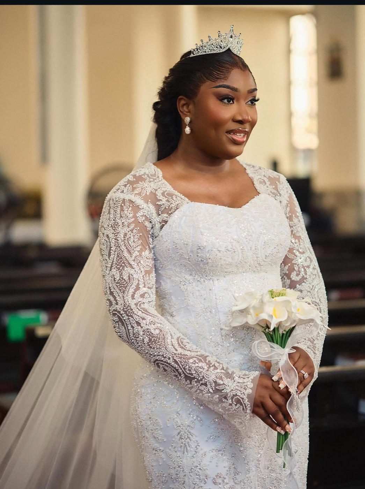
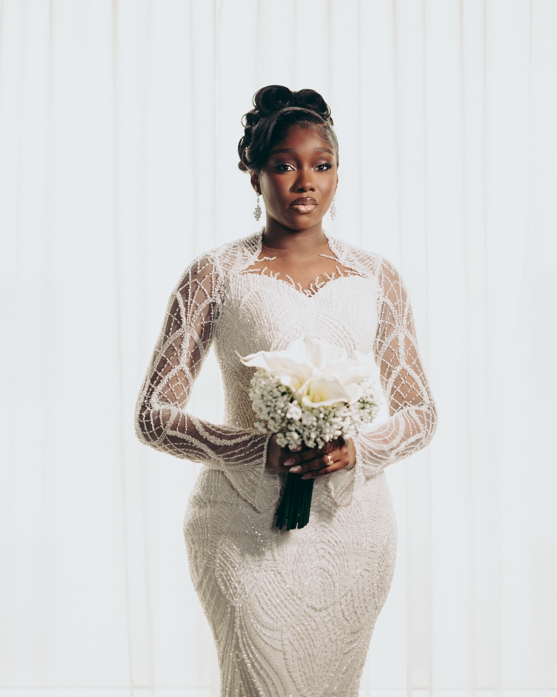
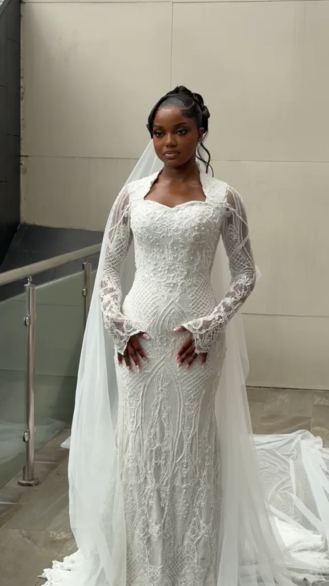

A virtual consultation
We meet over video, on your time zone. Your story, your ceremonies, your heritage, your vision — all captured.

For the bride planning home from abroad
Planning a Nigerian wedding from the UK or Canada? DearLover is your team on the ground — we style your entire homecoming remotely, so every look is handled while you plan from where you are.
You live in London. Or Manchester. Or Toronto.
But home is calling you back.
A wedding in the city you're from.
The tradition. The family. The homecoming.
And a hundred decisions to make from an ocean away.
You shouldn't have to fly back and forth, chase tailors over WhatsApp, or trust your looks to chance. DearLover becomes your stylist on the ground at home — so your homecoming wardrobe is curated, cohesive and unmistakably you, while you stay exactly where you are.
How it works from abroad
A guided journey designed for the distance — nothing needs you in Nigeria until the moment you land.
We meet over video, on your time zone. Your story, your ceremonies, your heritage, your vision — all captured.
We translate who you are into a clear direction for every look, and share it with you to shape and approve.
Your gowns, traditional looks, accessories and finishing details are curated and coordinated on the ground in Nigeria.
You arrive to fittings and refinement, not a scramble. Everything is prepared for your window at home.
On your wedding days, you're present with your people. We take care of the looks.
Brides who came home to us
Our brides are women who built lives abroad and chose to celebrate where they come from — styled for a homecoming that honoured both. This is their story, told through what they wore.

A "Detty December" celebration told across eight couture looks — from a wine-and-gold traditional to a beaded cathedral reveal.
Read her story
Four distinct looks for one love story — a golden traditional, a red-coral Edo look, a beaded ivory gown, and a mint after-party moment.
Read her story
A richly beaded wine-and-blush traditional crowned with gele, then a soft ivory reveal — regal, radiant, entirely her own.
Read her storyCouture that travels well
A full DearLover homecoming wardrobe costs a fraction of what couture bridal styling commands in the UK or Canada.
Our experiences begin at ₦1,150,000 — roughly £560 / CA$1,000 for two couture looks, up to a fully orchestrated eight-look celebration. Every package is tailored to your ceremonies during your consultation. (Foreign-currency figures approximate; confirmed at booking.)
Free download
Get The Homecoming Bride's Planner — how many looks you actually need, a month-by-month timeline built for the distance, how remote styling works, and how to get your traditional looks right. Yours free.
We'll email your planner and the occasional note for homecoming brides. No spam, ever. (Connect this form to your email tool to deliver the PDF automatically.)
Questions from brides abroad
Everything up to your wedding is virtual. Your consultation, your couture direction and approvals all happen online, on your time zone. We do the sourcing, curation and coordination on the ground in Nigeria, and fittings happen when you arrive home.
We plan your fitting window around your travel dates, so everything is prepared before you land. You arrive to refinement, not a scramble. Share your arrival date at consultation and we build the timeline around it.
Yes — traditional, white wedding, reception and after-party. Celebrating your heritage is at the heart of what we do, and your traditional looks receive the same couture care as your gown.
We recommend 6–12 months before your wedding so we can curate, source and refine without rushing. Booking early also secures your date in our calendar — especially for festive-season weddings.
We arrange secure international payment and confirm the currency and schedule during your consultation. A booking deposit secures your date, with the balance scheduled ahead of your wedding.
Absolutely. We style homecoming weddings across Nigeria; an out-of-Lagos styling fee of ₦200,000 applies, exclusive of travel. We confirm the details as part of your booking.
Wherever you are in the world, let's begin your DearLover journey.